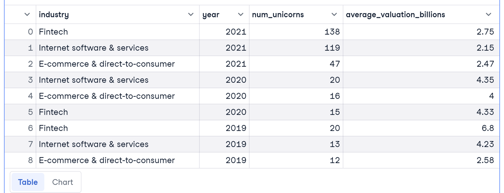

Analyzing Trending Industries
Given a scenario to analyze high-growth companies, I had to find the top industries producing the highest valuations and industry trends. I queried Datacamp’s database containing 4 tables and produced the top industries for the years 2021, 2020, and 2019.
This was the query that I created. I emphasized using CTEs, JOINs, and grouping.
WITH top_industries AS (
SELECT i.industry, COUNT(i.company_id) AS industry_count
FROM public.industries AS i
INNER JOIN public.dates AS d
ON i.company_id = d.company_id
WHERE EXTRACT(year FROM d.date_joined) IN (2019, 2020, 2021)
GROUP BY i.industry
ORDER BY industry_count DESC
LIMIT 3
)
num_unicorns AS (
SELECT
COUNT(i.company_id) AS num_unicorns,
i.industry,
EXTRACT(year FROM d.date_joined) AS year,
AVG(f.valuation) AS avg_valuation
FROM public.industries AS i
INNER JOIN public.dates AS d
ON i.company_id = d.company_id
INNER JOIN public.funding AS f
ON d.company_id = f.company_id
GROUP BY i.industry, EXTRACT(year FROM d.date_joined)
)
SELECT
ti.industry,
nu.year,
nu.num_unicorns,
ROUND(AVG(nu.avg_valuation/1000000000), 2) AS average_valuation_billions
FROM num_unicorns AS nu
INNER JOIN top_industries AS ti
ON nu.industry = ti.industry
WHERE nu.year IN (2019, 2020, 2021)
GROUP BY ti.industry, nu.year, nu.num_unicorns
ORDER BY nu.year DESC, nu.num_unicorns DESC;
Main Takeaways
Based on the results…fintech, internet software and sales, and e-commerce were trending industries from the years 2019-2021. There is an increasing, positive correlation for the number of unicorns (startups reaching $1billion in valuation) as the years increase. However, the average valuations for those industries seem to be decreasing from 2019 to 2021.